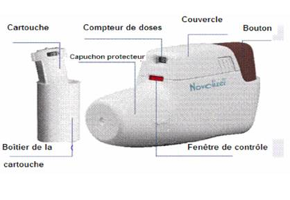

RÉSUMÉ DES CARACTÉRISTIQUES DU PRODUIT
ANSM - Mis à jour le : 15/11/2011
VENTILASTIN NOVOLIZER 100 microgrammes/dose, poudre pour inhalation
2. COMPOSITION QUALITATIVE ET QUANTITATIVE
Salbutamol ..................................................................................................................... 100 microgrammes
Sous forme de sulfate de salbutamol ................................................................................. 120 microgrammes
Pour une dose délivrée.
La dose délivrée est la dose disponible pour le patient après passage du produit dans l'embout buccal.
Excipient: 11,42 milligrammes (mg) de lactose monohydraté par dose délivrée.
Poudre pour inhalation.
Poudre blanche.
4.1. Indications thérapeutiques
Traitement symptomatique des maladies respiratoires obstructives réversibles, telles que l'asthme ou la bronchopneumopathie chronique obstructive à composante réversible.
Prévention de l'asthme déclenché par l'effort ou par l'exposition aux allergènes.
4.2. Posologie et mode d'administration
Posologie
La dose préconisée dépend de la sévérité de la maladie et sera adaptée en fonction de l'évolution de l'état clinique du patient.
Asthme
Adultes (y compris les sujets âgés et les adolescents):
Traitement symptomatique du bronchospasme: une inhalation (soit 100 microgrammes) à renouveler si besoin. Prévention de l'asthme déclenché par l'effort ou par les allergènes: deux inhalations (soit 200 microgrammes) 10 - 15 minutes avant l'exercice ou l'exposition aux allergènes incriminés.
La dose usuelle quotidienne ne devra pas dépasser 8 inhalations (soit 800 microgrammes/24 h).
Enfants (de 6 à 12 ans):
Traitement symptomatique du bronchospasme: une inhalation (soit 100 microgrammes) à renouveler si besoin. Prévention de l'asthme déclenché par l'effort ou par les allergènes: une inhalation (soit 100 microgrammes), à renouveler si besoin (soit 200 microgrammes au total), 10 - 15 minutes avant l'exercice ou avant l'exposition aux allergènes incriminés.
La dose usuelle quotidienne ne devra pas dépasser 4 inhalations (soit 400 microgrammes/24 h).
Enfants de moins de 6 ans:
VENTILASTIN NOVOLIZER n'est pas recommandé chez les enfants âgés de moins de 6 ans, l'efficacité et la sécurité de ce dispositif étant insuffisamment établis dans cette population.
BPCO
Adultes (y compris les sujets âgés et les adolescents):
Traitement symptomatique du bronchospasme: une inhalation (soit 100 microgrammes).
La dose usuelle quotidienne ne devra pas dépasser 8 inhalations (soit 800 microgrammes par 24 heures).
Recommandations générales:
Lorsqu'un autre dispositif d'inhalation est utilisé en remplacement de VENTILASTIN NOVOLIZER, la quantité de principe actif distribué au poumon peut être différente, ce qui peut nécessiter un réajustement de la posologie.
Mode d'administration
Voie inhalée.
Un intervalle d'au moins une minute doit être respecté entre chaque inhalation.
Utilisation et manipulation du dispositif NOVOLIZER

Rechargement:
1. Appuyer légèrement sur les surfaces nervurées situées des deux côtés du couvercle, pousser le couvercle vers l'avant et le retirer.
2. Retirer le film protecteur en aluminium du boîtier de la cartouche et prélever une cartouche neuve.
3. Insérer la cartouche dans l'inhalateur de poudre NOVOLIZER en orientant le compteur de doses face à l'embout buccal.
4. Replacer le couvercle dans ses guides latéraux et le pousser horizontalement vers le bouton jusqu'à ce qu'il s'insère dans son logement. La cartouche peut être laissée dans le NOVOLIZER jusqu'à ce qu'elle soit vide ou pendant six mois au maximum après son insertion.
Remarque: les cartouches de VENTILASTIN NOVOLIZER 100 microgrammes/dose ne peuvent être utilisées qu'avec l'inhalateur de poudre NOVOLIZER.
Utilisation du dispositif:
1. Toujours tenir le dispositif NOVOLIZER horizontalement lors de son utilisation. Tout d'abord, retirer le capuchon protecteur.
2. Appuyer à fond sur le bouton coloré. On perçoit alors un double déclic sonore et la couleur de la fenêtre de contrôle (en bas) passe du rouge au vert. Relâcher ensuite le bouton coloré.
La couleur verte de la fenêtre indique que le NOVOLIZER est prêt à l'emploi.
3. Expirer (hors de l'inhalateur de poudre).
4. Fermer les lèvres autour de l'embout buccal. Inhaler la poudre par une inspiration rapide et profonde. Pendant cette inhalation, on doit entendre un déclic sonore témoin d'une inhalation correctement effectuée.
Retenir sa respiration pendant quelques secondes, puis respirer normalement.
Remarque: si le patient a besoin de plusieurs inhalations, répéter les étapes 2-4.
5. Replacer le capuchon protecteur sur l'embout buccal - l'inhalation est maintenant terminée.
6. Le chiffre qui apparaît dans la fenêtre supérieure indique le nombre de doses restantes.
Remarque: il ne faut appuyer sur le bouton coloré qu'immédiatement avant l'inhalation.
Avec le dispositif NOVOLIZER, l'inhalation involontaire d'une double dose n'est pas possible. Le déclic sonore et le changement de couleur de la fenêtre de contrôle indiquent que l'inhalation a été effectuée correctement. Si la couleur de la fenêtre de contrôle demeure inchangée, il faut recommencer l'inhalation. Si l'inhalation n'est pas effectuée correctement après plusieurs tentatives, le patient devra consulter son médecin.
Nettoyage
L'inhalateur de poudre NOVOLIZER doit être nettoyé à intervalles réguliers et au minimum lors de chaque changement de cartouche. Pour connaître les instructions pour le nettoyage de l'appareil, se référer au « Mode d'emploi du dispositif NOVOLIZER » à la fin de la notice d'utilisation contenue dans la boîte.
Remarque: afin d'assurer une utilisation correcte de l'inhalateur, il convient d'expliquer soigneusement aux patients le mode d'emploi de l'appareil. Pour l'utilisation de ce médicament chez l'enfant, il conviendra de s'assurer qu'un adulte surveille l'administration du médicament.
Hypersensibilité (allergie) au principe actif salbutamol ou à l'excipient lactose monohydraté (qui contient de faibles quantités de protéines de lait).
4.4. Mises en garde spéciales et précautions d'emploi
Le traitement sera adapté par palier en fonction de la sévérité de la maladie.
Les bronchodilatateurs ne constituent pas le traitement de l'asthme persistant à part entière et ne doivent pas être utilisés seuls. Les patients atteints d'asthme sévère sont particulièrement exposés au risque de crise d'asthme aiguë grave pouvant menacer le pronostic vital et doivent donc être suivi régulièrement pour une adaptation du traitement.
Chez le patient asthmatique, le traitement par VENTILASTIN NOVOLIZER 100 microgrammes/dose, poudre pour inhalation ne doit pas retarder la mise en route d'un traitement de fond régulier par corticoïdes inhalés s'il s'avère nécessaire.
Le salbutamol doit être utilisé avec prudence dans les cas suivants:
· troubles cardiaques sévères, notamment infarctus du myocarde récent;
· coronaropathie, cardiomyopathie obstructive et tachyarythmie;
· hypertension artérielle sévère non contrôlée;
· anévrisme;
· hyperthyroïdie;
· diabète mal contrôlé;
· phéochromocytome.
De rares cas d'ischémie du myocarde associés au traitement par le salbutamol ont été rapportés par la pharmacovigilance depuis la commercialisation et au travers de la littérature. Il convient de bien rappeler aux patients présentant une cardiopathie sévère sous-jacente (telles que cardiomyopathie ischémique, tachyarythmie ou insuffisance cardiaque) de consulter leur médecin en cas de douleurs thoraciques ou autres signes d'origine cardiaque qui surviendraient avec la prise de salbutamol.
Une auto évaluation quotidienne des symptômes par le patient contribue au suivi de l'évolution de l'asthme et permet d'en vérifier son contrôle pour faciliter l'adaptation des traitements bronchodilatateur et anti-inflammatoire. Le médecin devra s'assurer que les patients sont formés à la réalisation de mesures régulières du débit expiratoire de pointe (DEP) au moyen d'un débitmètre de pointe portable.
Si les symptômes respiratoires ne sont pas suffisamment contrôlés ou s'aggravent, ou bien si le patient augmente sa consommation de bronchodilatateurs par voie inhalée pour traiter ses symptômes, une consultation médicale est nécessaire afin de réévaluer la conduite thérapeutique. En cas d'asthme, il convient alors d'envisager la mise en route ou l'augmentation de la corticothérapie inhalée voire l'instauration d'une corticothérapie orale en cure courte. En cas de bronchopneumopathie chronique obstructive chronique, un traitement régulier par un ou plusieurs bronchodilatateurs de longue durée peut être indiqué. D'autres moyens thérapeutiques (réhabilitation du patient, corticothérapie inhalée ou oxygénothérapie de longue durée) peuvent également s'avérer nécessaires.
L'augmentation des prises des bronchodilatateurs, et en particulier d'un bêta2-stimulant à action rapide et brève, pour soulager les symptômes reflète une détérioration de l'état clinique. Une aggravation rapide et soudaine des symptômes de la maladie peut mettre en jeu le pronostic vital. Le patient devra être informé que dans ces conditions il convient de consulter rapidement un médecin.
Si la dose habituellement efficace de béta2mimétiques à action rapide et de courte durée devient insuffisante ou si l'augmentation de la fréquence de ses symptômes nécessite une augmentation de la consommation de bronchodilatateurs, un avis médical est nécessaire pour réévaluer la conduite thérapeutique. L'utilisation de doses supérieures aux doses recommandées peut présenter des risques (voir rubrique 4.9). Le patient doit être averti qu'une consultation médicale immédiate est nécessaire si les symptômes aigus de l'asthme ne sont pas soulagés ou s'aggravent malgré une deuxième inhalation, ou si le patient ne parvient pas à déclencher l'inhalateur de poudre NOVOLIZER lors d'une crise d'asthme aiguë.
Les bêta2-stimulants peuvent induire une hypokaliémie potentiellement grave, s'ils sont administrés par voie parentérale ou par nébulisation. La prudence est recommandée en cas d'asthme aigu grave car les effets hypokaliémiants peuvent être potentialisés par l'hypoxie.
Les produits à base de salbutamol destinés à être administrés par voie inhalée sont inadaptés pour le traitement des menaces d'accouchement prématuré ou d'avortement spontané.
Le lactose peut contenir des traces de protéines de lait. La quantité de lactose contenue dans VENTILASTIN NOVOLIZER n'induit normalement pas de trouble chez les sujets intolérants au lactose. Cependant, chez le sujet atteint de déficit enzymatique important, une intolérance au lactose a été très rarement rapportée après l'inhalation de poudre contenant du lactose.
Il conviendra d'expliquer au patient le mode d'utilisation du dispositif NOVOLIZER et de vérifier sa technique d'inhalation pour s'assurer de son aptitude à utiliser correctement le dispositif NOVOLIZER.
4.5. Interactions avec d'autres médicaments et autres formes d'interactions
+ Bêta-bloquants
Le salbutamol et les bêta-bloquants non sélectifs ne doivent généralement pas être associés. L'administration d'un bêta-bloquant chez un asthmatique l'expose à un risque de bronchoconstriction sévère.
+ Anesthésiques halogénés (tels que halothane, méthoxyflurane ou enflurane)
L'administration concomitante de salbutamol et d'anesthésiques halogénés (tels que halothane, méthoxyflurane ou enflurane) augmente le risque de survenue de troubles du rythme et d'hypotension sévères. En prévision d'une anesthésie, les prises de salbutamol devront être interrompues au moins 6 heures avant l'administration d'un anesthésique halogéné.
+ Xanthines, glucocorticoïdes, diurétiques et glucosides cardiotoniques (digoxine)
Le traitement par salbutamol peut entraîner une hypokaliémie (voir rubriques 4.4 et 4.8). Cet effet peut être potentialisé par l'administration concomitante d'autres médicaments, notamment les xanthines, glucocorticoïdes, diurétiques et glucosides cardiotoniques (digoxine). Il est recommandé de surveiller la kaliémie si ces traitements sont associés.
+ Inhibiteurs de la monoamine oxydase et les antidépresseurs tricycliques
Les inhibiteurs de la monoamine oxydase et les antidépresseurs tricycliques peuvent augmenter le risque d'effets indésirables cardiovasculaires.
Les études précliniques et une expérience clinique de longue durée n'ont pas révélé d'effets tératogènes du salbutamol. Une augmentation de la fréquence cardiaque peut être observée chez le fœtus lors de l'administration de salbutamol chez la femme enceinte.
Le salbutamol est excrété dans le lait maternel, et l'administration de fortes doses peut entraîner la survenue d'effets pharmacologiques chez l'enfant au cours de l'allaitement.
Le salbutamol reste le traitement bronchodilatateur de première intention chez la femme enceinte. Néanmoins, son administration chez la femme enceinte notamment au cours du premier trimestre de la grossesse et chez la femme qui allaite ne doit être envisagée que si nécessaire (voir rubrique 5.3).
4.7. Effets sur l'aptitude à conduire des véhicules et à utiliser des machines
Aucune étude sur l'aptitude à conduire des véhicules et à utiliser des machines n'a été réalisée.
Des effets indésirables ont été rapportés chez jusqu'à environ 10 % des patients traités. Ces effets sont fonction de la dose et de la sensibilité individuelle. Les plus fréquemment rapportées sont: dysgueusie (goût désagréable et inhabituel) et réactions locales (irritation buccopharyngée, sensation de brûlure de la langue), tremblements fins (en général au niveau des mains), nausées, hypersudation, agitation, céphalées et sensations de vertiges. Ces effets indésirables peuvent régresser en une ou deux semaines avec la poursuite du traitement.
Comme avec d'autres traitements inhalés, un bronchospasme peut survenir dans de rares cas, se manifestant par une aggravation des râles sibilants immédiatement après la prise. Pour traiter le bronchospasme paradoxal, il conviendra d'avoir recours à une autre forme de salbutamol ou à un autre bronchodilatateur inhalé à action rapide. Le traitement par VENTILASTIN NOVOLIZER 100 microgrammes/dose, poudre pour inhalation sera immédiatement interrompu, le patient doit être examiné et un traitement différent sera instauré si nécessaire.
Il a été décrit dans la littérature un effet stimulant du salbutamol inhalé sur le système nerveux central, se manifestant par une hyperexcitabilité, une hyperactivité, des troubles du sommeil et des hallucinations. Ces phénomènes ont été principalement observés chez des enfants (jusqu'à 12 ans).
Les effets indésirables sont présentés ci-dessous par système classe-organe et par ordre de fréquence. Les fréquences sont définies comme suit:
Très fréquent (≥ 1/10); fréquent (≥ 1/100 à < 1/10); peu fréquent (≥ 1/1 000 à < 1/100); rare (≥ 1/10 000 à < 1/1 000) et très rare (< 1/10 000).
|
Systèmes |
Très fréquent |
Fréquent |
Peu fréquent |
Rare |
Très rare y compris cas isolés <1/10000 |
|
|
Troubles hématologiques |
|
|
|
|
Thrombopénie |
|
|
Troubles du système immunitaire |
|
|
|
|
Réaction d'hypersensibilité |
|
|
Troubles métaboliques |
|
|
|
Hypokaliémie, hyperglycémie, augmentation des taux d'insuline, d'acide gras libre, glycérol et corps cétosiques. |
|
|
|
Troubles psychiatriques |
|
Agitation |
|
|
|
|
|
Troubles du système nerveux |
|
Tremblements fins, vertiges |
|
Comportement hyperactif |
Hyperexcitabilité, troubles du sommeil, hallucinations |
|
|
Troubles cardio-vasculaires |
|
|
|
Tachycardie, arythmie cardiaque (fibrillation auriculaire, tachycardie supraventriculaire, extrasystole), palpitation, angor, modification de la pression artérielle systémique (augmentation ou diminution) |
Ischémie myocardique |
|
|
Troubles vasculaires |
|
|
|
Vasodilatation périphérique |
Collapsus |
|
|
Troubles respiratoires, thoraciques et mediastinaux |
|
|
|
Toux |
|
|
|
Troubles gastro-intestinaux |
|
Nausée, dysgueusie |
|
|
|
|
|
Anomalies de la peau et du tissu sous-cutané |
|
Hypersudation |
|
Prurit, rash, érythème, urticaire, angiœdème |
|
|
|
Troubles musculo-squelettiques |
|
|
|
Crampes musculaires |
|
|
|
Troubles rénaux |
|
|
|
|
Néphrite |
|
|
Manifestations générales et locales |
|
Céphalées, réactions locales: irritation buccopharyngée, sensation de brûlure de la langue |
|
|
|
|
Le lactose monohydraté contient de faibles quantités de protéines de lait et peut donc provoquer des réactions allergiques.
En cas de surdosage, les effets indésirables mentionnés plus haut (voir Rubrique 4.8) sont rapidement observés avec une sévérité augmentée: tachycardie, palpitations, troubles du rythme, agitation, troubles du sommeil, douleurs thoraciques et tremblements le plus souvent des mains mais pouvant se généraliser au corps entier.
Des réactions psychotiques ont été occasionnellement observées avec des doses excessives de salbutamol. En cas de surdosage en salbutamol, une augmentation du passage du potassium extracellulaire à l'intérieur les cellules entraînant une hypokaliémie peut s'associer à une hyperglycémie, une hyperlipidémie et une hypercétonémie.
Conduite à tenir:
· Le traitement d'un surdosage en bêta-sympathomimétique est essentiellement symptomatique. En cas d'ingestion de quantité importante: envisager un lavage gastrique. L'administration de charbon activé et d'un laxatif peuvent réduire l'absorption digestive du β-sympathomimétique.
· L'administration d'un bêta-bloquant cardiosélectif peut être envisagée pour le traitement des troubles cardiaques dus à un surdosage en salbutamol. Néanmoins, il convient d'éviter, dans la mesure du possible, l'utilisation des béta-bloquants chez les sujets ayant des antécédents de bronchospasme. Une surveillance électrocardiographique doit être réalisée chez ces patients.
· En cas d'hypotension artérielle importante: remplissage vasculaire (dérivés du plasma).
· En cas d'hypokaliémie: surveillance du ionogramme sanguin, apport électrolytique.
5. PROPRIETES PHARMACOLOGIQUES
5.1. Propriétés pharmacodynamiques
Classe pharmacothérapeutique: AGONISTE SELECTIF BETA-2 ADRENERGIQUE, Code ATC: R03AC02.
Le salbutamol est un agoniste sélectif des récepteurs β2-adrénergiques. Il exerce un effet sélectif sur les récepteurs β2 bronchiques et aux doses thérapeutiques, il est peu actif sur les récepteurs β1 cardiaques. Le salbutamol inhalé stimule les récepteurs β2 des muscles lisses bronchiques, entraînant une bronchodilatation rapide, significative en quelques minutes et persistant pendant 4 à 6 heures. Le salbutamol induit une vasodilatation entraînant un effet chronotrope réflexe, et des modifications métaboliques, dont une hypokaliémie.
5.2. Propriétés pharmacocinétiques
L'absorption et le métabolisme du salbutamol dans les poumons et les voies digestives sont différents.
Après inhalation, environ 20 à 47 % du principe actif présent dans la dose délivrée atteignent les voies respiratoires profondes; le restant se dépose dans la bouche et la partie supérieure des voies respiratoires et est dégluti. La fraction déposée au niveau bronchopulmonaire est absorbée dans les tissus pulmonaires et la circulation générale, et n'est pas métabolisée par les poumons. En atteignant la circulation systémique, le salbutamol subit un métabolisme hépatique et est excrété principalement par voie urinaire sous forme de produit inchangé et de sulfate phénolique.
La fraction déglutie d'une dose inhalée est absorbée dans les voies digestives et subit un effet de premier passage important avec transformation en sulfate phénolique. Le produit inchangé et le conjugué sont tous deux excrétés principalement par voie urinaire. La majeure partie d'une dose de salbutamol administrée par voie orale ou intraveineuse ou par inhalation est excrétée en 72 heures. La liaison du salbutamol aux protéines plasmatiques est de l'ordre de 10 %.
5.3. Données de sécurité préclinique
Les études précliniques n'ont pas mis en évidence de risque particulier chez l'homme à partir d'études conventionnelles de pharmacologie de sécurité, de toxicité à doses réitérées, de génotoxicité, d'études du potentiel cancérigène et de toxicité sur la reproduction.
Les effets observés lors des études de toxicité étaient liés à l'activité bêta-adrénergique du salbutamol.
Lactose monohydraté.
Sans objet.
Médicament (Ventilastin poudre pour inhalation dans la cartouche conditionnée dans un boîtier)
Durée de conservation avant ouverture du boîtier: 3 ans.
Durée de conservation après première ouverture du boîtier: 6 mois.
Dispositif (inhaleur de poudre NOVOLIZER)
Durée de conservation avant la première utilisation: 3 ans.
Durée de conservation en cours d'utilisation: 1 an.
Remarque: le fonctionnement du NOVOLIZER a été validé par des tests portant sur 2000 doses unitaires. En conséquence, un nombre maximal de 10 cartouches de 200 doses peut être utilisé avec le même inhalateur au cours d'une année, avant son remplacement.
6.4. Précautions particulières de conservation
A conserver à une température ne dépassant pas 30°C.
Conserver la cartouche dans l'emballage extérieur d'origine.
En cours d'utilisation, conserver à l'abri de l'humidité.
6.5. Nature et contenu de l'emballage extérieur
Conditionnement d'origine
1 cartouche (Polystyrène/Polypropylène) de 200 doses contenant un minimum de 2,308 g de poudre, conditionnée dans un boîtier en polypropylène scellé par un film d'aluminium, et 1 inhalateur de poudre (embout buccal en polycarbonate et dispositif en copolymère d'acrylnitrilbutadiènestyrol, polyoxyméthylène).
Conditionnements de recharge
1 cartouche (Polystyrène/Polypropylène) de 200 doses contenant un minimum de 2,308 g de poudre, conditionnée dans un boîtier en polypropylène scellé par un film d'aluminium.
2 cartouches (Polystyrène/Polypropylène) contenant chacune un minimum de 2,308 g de poudre soit 200 doses, conditionnées dans un boîtier en polypropylène scellé par un film d'aluminium.
Conditionnement hospitalier
1 cartouche (Polystyrène/Polypropylène) de 200 doses contenant un minimum de 2,308 g de poudre, conditionnée dans un boîtier en polypropylène scellé par un film d'aluminium, et 1 inhalateur de poudre (embout buccal en polycarbonate et dispositif en copolymère d'acrylnitrilbutadiènestyrol, polyoxyméthylène).
Boîte de 10.
Toutes les présentations peuvent ne pas être commercialisées.
6.6. Précautions particulières d’élimination et de manipulation
Pas d'exigences particulières.
7. TITULAIRE DE L’AUTORISATION DE MISE SUR LE MARCHE
MEDA PHARMA
25, BOULEVARD DE L'AMIRAL BRUIX
75016 PARIS
8. NUMERO(S) D’AUTORISATION DE MISE SUR LE MARCHE
· 364 120-2 ou 34009 364 120 2 6: 200 doses en cartouche (Polystyrène/Polypropylène), boîte de 1 avec inhalateur.
· 364 121-9 ou 34009 364 121 9 4: 200 doses en cartouche (Polystyrène/Polypropylène), boîte de 1.
· 364 122-5 ou 34009 364 122 5 5: 200 doses en cartouche (Polystyrène/Polypropylène), boîte de 2.
· 565 509-4 ou 34009 565 509 4 4: 200 doses en cartouche (Polystyrène/Polypropylène), boîte de 10 avec inhalateur.
9. DATE DE PREMIERE AUTORISATION/DE RENOUVELLEMENT DE L’AUTORISATION
[à compléter par le titulaire]
10. DATE DE MISE A JOUR DU TEXTE
[à compléter par le titulaire]
Sans objet.
12. INSTRUCTIONS POUR LA PREPARATION DES RADIOPHARMACEUTIQUES
Sans objet.
Liste I.